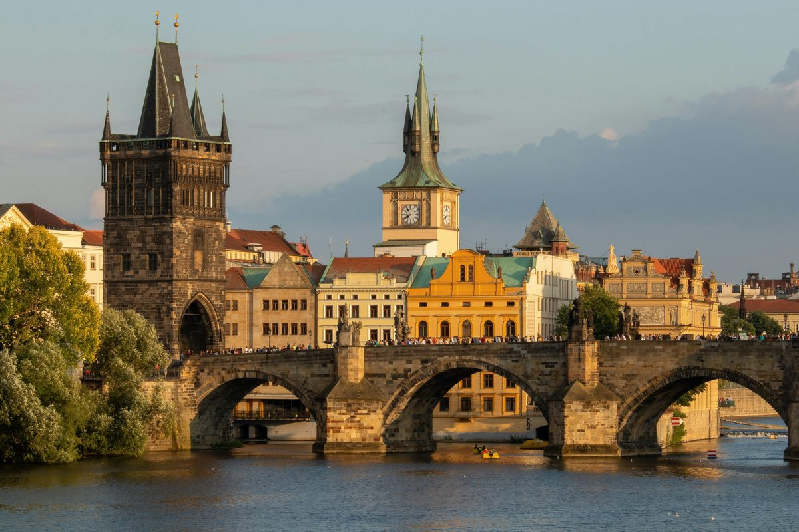

Medieval squares, a six-hundred-year-old clock, the Jewish Quarter, Charles Bridge, and the Lennon Wall. Prague at your own pace.
From the medieval clock to the Jewish Quarter, across Charles Bridge, past a satirist's fountain, and down to the Lennon Wall at the foot of the castle hill. Not bad for a morning.
Get all 10 stops with narrated audio and live GPS. A code will be sent to you after purchase to unlock the full tour.
Unlock Full Tour - €4.99Payments powered by Lemon Squeezy & Stripe